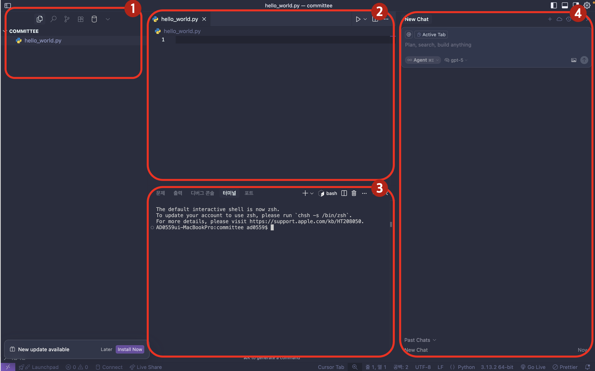

박봉섭 KG · 3개 세션 통합 대시보드
터미널과 클로드 코드의 기본 개념을 이해하고, 첫 대화를 성공적으로 수행합니다
| 일반 챗봇 | 클로드 코드 |
|---|---|
| 답변을 텍스트로 알려줌 | 직접 조회/분석/결과 생성 |
| 사용자가 복사-붙여넣기 | 파일, 차트, 보고서 자동 생성 |
| 매번 처음부터 설명 | 프로젝트 맥락을 기억 |
| 추천순위 | 에디터 | 터미널 단축키 |
|---|---|---|
| 1위 | VS Code | Ctrl + ` |
| 2위 | Cursor | Ctrl + ` |
| 3위 | PyCharm | Alt + F12 |
결과물을 에디터에서 바로 볼 수 있는 장점!
CLAUDE.md · .claude/ · .mcp.json을 찾고,
@파일명 참조도 모두 이 폴더 기준으로 동작합니다.
@파일명 으로 직접 참조시킬 수 있음claude 명령어로 AI 팀원과 직접 대화하는 메인 작업창@파일로 참조한 파일을 읽고,@매출_2026Q1.xlsx로 파일까지 직접 참조
메모장에서 미리 정리한 프롬프트를 붙여넣으면 더 좋습니다 (Session 3 참조)
@ 참조가 모든 걸 처리합니다
output/ 폴더에 discovery_weekly_chart.png, 디스커버리_매출분석.pptx가 새로 나타남
좌측 트리가 자동으로 갱신되며 새 파일이 표시됩니다
입력은 단 한 곳(③ 터미널)이지만 출력은 세 곳(①·②·③)에 동시에 나타납니다.
여러분은 "③ 터미널에 자연어로 말하기"만 하면 되고, 나머지 영역은 Claude가 알아서 채워 줍니다.
그래서 클로드 코드는 "코딩"이 아니라 "동료에게 일을 부탁하는 것"에 가깝습니다.
| 명령어 | 수준 |
|---|---|
claude | 초보자 추천 |
claude --permission-mode acceptEdits | 익숙해진 후 |
claude --dangerously-skip-permissions | 고급자만 |
| 항목 | 🟡 자동 승인 (기본) | 🟠 자동 승인 + 화이트리스트 ⭐ | 🔴 Bypass |
|---|---|---|---|
| 시작 명령어 | claude --permission-mode acceptEdits |
claude --permission-mode acceptEdits --allowedTools "Bash(*)" "WebFetch" |
claude --dangerously-skip-permissions |
| 세션 중 추가 | Shift+Tab 1번 |
/permissions add Bash(npm:*) |
Shift+Tab 사이클 끝까지 |
| 영구 설정 | — | .claude/settings.local.json 의 permissions.allow |
— |
| 파일 편집 (Edit/Write) | ✓ 자동 | ✓ 자동 | ✓ 자동 |
| Bash 명령어 | ❓ 매번 확인 | ✓ 화이트리스트만 자동 | ✓ 전부 자동 |
| MCP 도구 호출 | ❓ 매번 확인 | ✓ 화이트리스트만 자동 | ✓ 전부 자동 |
위험한 명령 (rm -rf) |
🚫 차단 | 🚫 화이트리스트 밖이면 차단 | ⚠ 자동 실행 |
| 위험도 | 🟡 낮음~중간 | 🟠 중간 (제어됨) | 🔴 높음 |
| 추천 환경 | 코드 반복 수정 | 일상 작업 (가장 추천) | 격리 컨테이너만 |
--allowedTools 플래그나 /permissions add 명령에 다음과 같은 패턴을 줄 수 있습니다.
| 패턴 | 의미 |
|---|---|
Bash(*) | 모든 Bash 명령어 자동 승인 |
Bash(npm:*) | npm install, npm run build 등 npm 명령만 자동 |
Bash(git:status) | 정확히 git status 만 자동 (다른 git 명령은 확인) |
Bash(git:*) | 모든 git 명령어 자동 |
WebFetch(domain:github.com) | github.com 도메인 fetch만 자동 |
Edit, Write, Read | 편집/쓰기/읽기 도구 전체 자동 |
.claude/settings.local.json
이렇게 저장해두면 매번 플래그를 안 적어도 프로젝트 폴더에서 claude 만 입력하면 자동 적용됩니다.
🟡 자동 승인 = 파일 편집만 자동
🟠 자동 승인 + 화이트리스트 = 파일 편집 + 내가 허용한 도구만 자동 ← 실전에서 가장 추천
🔴 Bypass = 전부 자동 (위험!)
가운데 옵션이 속도와 안전의 균형을 잡는 가장 실용적인 패턴입니다.
Bypass는 회사 메인 PC / Git 저장소 / 운영 서버에서는 절대 사용 금지.
| 모드 | 비유 | 설명 |
|---|---|---|
| 일반 | 수동 기어 | 모든 작업 전 확인 |
| 자동 승인 | 자동 기어 | 대부분 알아서 처리 |
| 계획 | 네비게이션 | 계획만 세움 (실행X) |
claude 명령어로 시작 (초보자는 일반 모드)프로젝트 구조를 이해하고, 지식그래프와 MCP를 활용해 실제 데이터 분석을 수행합니다
my-rule.md 새 파일 생성my-skill/SKILL.md 새 폴더 생성
| 규칙 | 비유 | 효과 |
|---|---|---|
| 도구 사용 규정 | 시스템 매뉴얼 | 정확한 데이터 탐색 |
| 분석 규정 | 용어 사전 | 체계적 분석 |
| 시각화 규정 | 디자인 가이드 | 최적 차트 자동 선택 |
| 스킬 | 하는 일 | 사용 예시 |
|---|---|---|
| data-processing | 데이터 집계 | "카테고리별 매출" |
| chart-visualization | 기본 차트 | "막대그래프로" |
| chart-plotly | 고급 차트 | "트리맵으로" |
| pptx-report | PPT 생성 | "PPT로 정리해줘" |
| html-report | HTML 리포트 | "대시보드로" |
MCP라는 단어를 몰라도 전혀 문제없습니다. 모든 연결이 자동입니다.
↓ 다음 섹션에서 MCP 직접 설치/활용을 자세히 다룹니다
지식그래프가 "데이터 지도"라면, MCP는 그 지도와 외부 시스템을 잇는 다리입니다. Claude Code에 브라우저 자동화, 디자인 툴, 이미지 생성 등의 능력을 직접 부여합니다.
AI에게 전동 공구를 쥐어주는 것. 외부 도구와 서비스에 직접 접근할 수 있게 해줍니다.
| MCP 없이 | MCP 있을 때 |
|---|---|
| 코드만 작성하고 답변 | 브라우저 조작, 이미지 생성, DB 쿼리 |
| 외부 서비스 접근 불가 | Figma, GitHub, Slack 직접 연동 |
| 파일 읽기/쓰기만 가능 | API 호출, 웹 스크래핑, 자동화 |
stdio = 로컬 프로세스 실행 | http = 원격 서버 접속
설정 후 Claude Code 재시작 필요
mcp-remote 프록시가 필요 없습니다 — 사내 게이트웨이(orbit-mcp-api.fnf.co.kr)를 직접 호출.
Windows / Mac 동일 설정으로 작동합니다.
.mcp.json에 추가 — 한 줄로 끝:
✓ Node.js / npx / mcp-remote 패키지 불필요 | ✓ 사용자명·로컬 IP 설정 불필요 | ✓ 사내 인증 게이트웨이가 자동 처리
.mcp.json에 추가 — Windows와 완전히 동일:
✓ HTTP 방식이라 OS 독립적 |
✓ whoami 같은 사용자명 확인 단계 없음 |
✓ 터미널 셸(zsh/bash) 차이도 무관
이전: stdio + mcp-remote 프록시 + 로컬 IP →
지금: 순수 HTTP + 사내 게이트웨이 URL 한 줄.
인증·라우팅·리트라이를 서버가 모두 처리하므로 클라이언트는 URL만 알면 됩니다.
활성화 설정 — .claude/settings.local.json
| 요소 | 예시 |
|---|---|
| 브랜드명 | MLB, 디스커버리, MLB키즈... |
| 기간 | 전주, 이번 달, 3월 첫째주~셋째주 |
| 분석 대상 | 채널별 매출, 상품별 매출, CS현황 |
"디스커버리 전주 채널별 매출 알려줘"
| 요청 | 결과 |
|---|---|
| "차트로 보여줘" | 그래프/차트 이미지 |
| "PPT로 정리해줘" | PowerPoint 보고서 |
| "HTML 리포트로" | 웹 대시보드 |
| "엑셀로 저장해줘" | Excel 파일 |
| 브랜드 | 코드 |
|---|---|
| MLB | M |
| Discovery | X |
| Duvetica | V |
| Sergio Tacchini | ST |
| MLB KIDS | I |
결과물은 src/output/에 저장되며, "파일을 열어드릴까요?"라고 안내합니다.
claude mcp add 또는 .mcp.json)curl /upload → 반환된 img_xxx ID로 도구 호출프롬프트 기술과 커스터마이징으로 나만의 자동화 워크플로우를 구축합니다
CLAUDE.md를 자동 생성하여 프로젝트 맥락을 영구 보존합니다.
DCS AI 프로젝트는 이미 세팅 완료!
핵심 내용은 유지하며 대화를 압축합니다.
같은 주제를 계속 할 때 사용
대화를 초기화하고 깨끗한 상태에서 새 시작합니다.
완전히 다른 주제로 넘어갈 때
| 단계 | 기법 | 예시 |
|---|---|---|
| 1 | Zero-shot | "매출 분석해줘" |
| 2 | Few-shot | "이런 형식으로: (예시)" |
| 3 | Chain-of-Thought | "단계별로 분석해줘" |
| 4 | Role + Context | "MD 관점에서 보고용으로" |
"이 분석에 맞는 프롬프트를 만들어줘"
→ 클로드가 최적의 프롬프트를 제안!
"매출 분석 시 항상 전년비와 목표비를 함께 표시할 것"
"주간 매출 대시보드 자동 생성 스킬"
"브랜드 컬러 차트 생성 도구"
"클로드 코드는 대시보드를 만드는 게 아니라,
대시보드를 만드는 코드를 만든다"
| 특수 키워드 | 기능 |
|---|---|
| "심층 리서치" / "딥 리서치" | Brave + Perplexity 병렬 웹 검색 |
| "심층 분석" | 데이터 deep dive |
| "교차검증해줘" | 결과 정확성 자동 검증 |
| 세션 | 주제 | 핵심 메시지 |
|---|---|---|
| Session 1 | 기초 입문 | "클로드 코드는 직접 일하는 AI 팀원" |
| Session 2 | 시스템 & 지식그래프 + MCP | "지식그래프로 데이터를 찾고, MCP로 외부 도구를 연결" |
| Session 3 | 고급 활용 | "반복작업을 스킬로 만들어 나만의 자동화 구축" |
XML 태그로 구조화하고, @로 파일/폴더를 직접 참조시킨 것이 핵심입니다.
메모장에서 미리 정리한 뒤 붙여넣기하면 이런 결과물을 만들 수 있습니다.
{kind=link}
{kind=link}